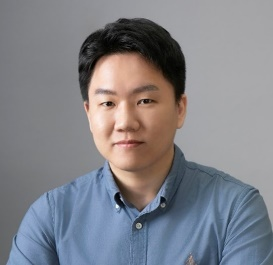

Team
Advisor

Geon-Tae Park, Ph.D.
Assistant Professor
Dept. of Energy Engineering · Dept. of Battery Engineering, Hanyang University
Dept. of Energy Engineering · Dept. of Battery Engineering, Hanyang University
Prof. Geon-Tae Park joins Hanyang University in September 2026 to lead the Materials for Sustainable Energy Lab. His research centers on the synthesis and structural design of advanced electrode materials for lithium-ion and next-generation batteries — spanning high-Ni layered oxides, cobalt-free cathodes, and a new class of manganese-rich, zero-strain cathodes. Most recently, he is especially interested in cathode materials for next-generation batteries and, building on distinctive materials-synthesis techniques, in broadening materials development into other energy applications toward sustainable energy. He was named an Elsevier World’s Top 2% Researcher in 2025.
Research interests
Advanced Electrode Materials for Li-Ion & Next-Generation Batteries
Synthesis of Energy Storage & Conversion Materials
Next-Generation Rechargeable Batteries
Structural Analysis
Recycling Battery Materials
Battery Engineering
Carbon Capture & Cracking (emerging)
Plastic Recycling & Upcycling (emerging)
Bio-Batteries (emerging)
Experience
Sep 2026 – Present
Assistant ProfessorDept. of Energy Engineering, Hanyang University
Sep 2026 – Present
Assistant ProfessorDept. of Battery Engineering, Hanyang University
Mar 2026 – Aug 2026
Research Assistant ProfessorMaterials Science & Engineering, University of Washington, Seattle, USA
Sep 2025 – Feb 2026
BK Research Assistant ProfessorDept. of Energy Engineering, Hanyang University
Sep 2023 – Aug 2025
Post-Doctoral ResearcherDept. of Energy Engineering, Hanyang University
Education
Mar 2017 – Aug 2023
Ph.D. & M.S. (Combined), Energy EngineeringHanyang University, Seoul, Republic of Korea
Mar 2013 – Feb 2017
B.S., Chemical EngineeringHanyang University, Seoul, Republic of Korea
Awards & honors
2025
World’s Top 2% Researcher · Elsevier / Stanford
2025.01
Top 100 National R&D Achievements · MSIT (collaborating team)
2023.11
Minister’s Award — Grand Prize · Energy HR Innovation Program, MOTIE
2023.08
Outstanding Doctoral Dissertation Award · Top Honors, Hanyang University
2023.06
Excellence Award in Research Outcomes · KETEP
2022.12
Wonik Award — Excellence Prize · NAEK
2021.11
Top 100 National R&D Achievements · MSIT (collaborating team)
Professional service
Editorial board
- 2026–EES Batteries — Early Career Board Member
Peer review
- JournalsAdvanced Materials, Nature Communications, ACS Energy Letters, Advanced Functional Materials, Small, Nano Energy